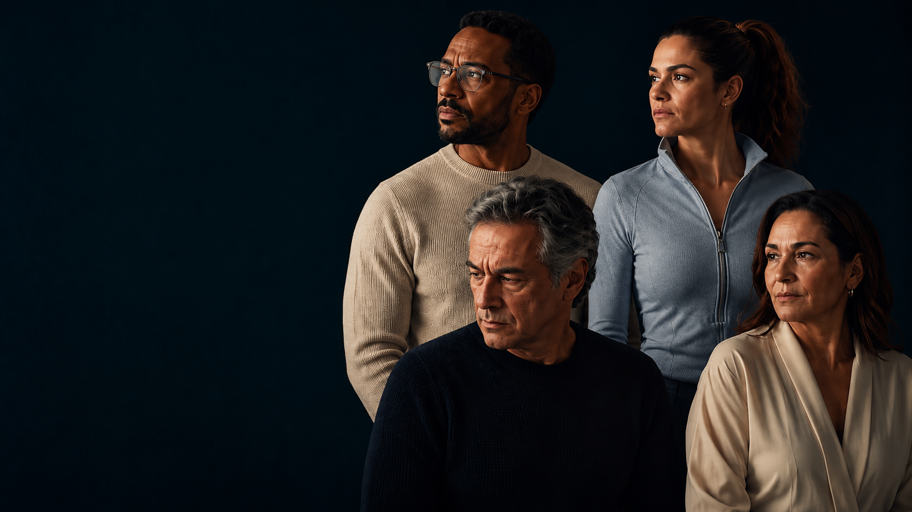
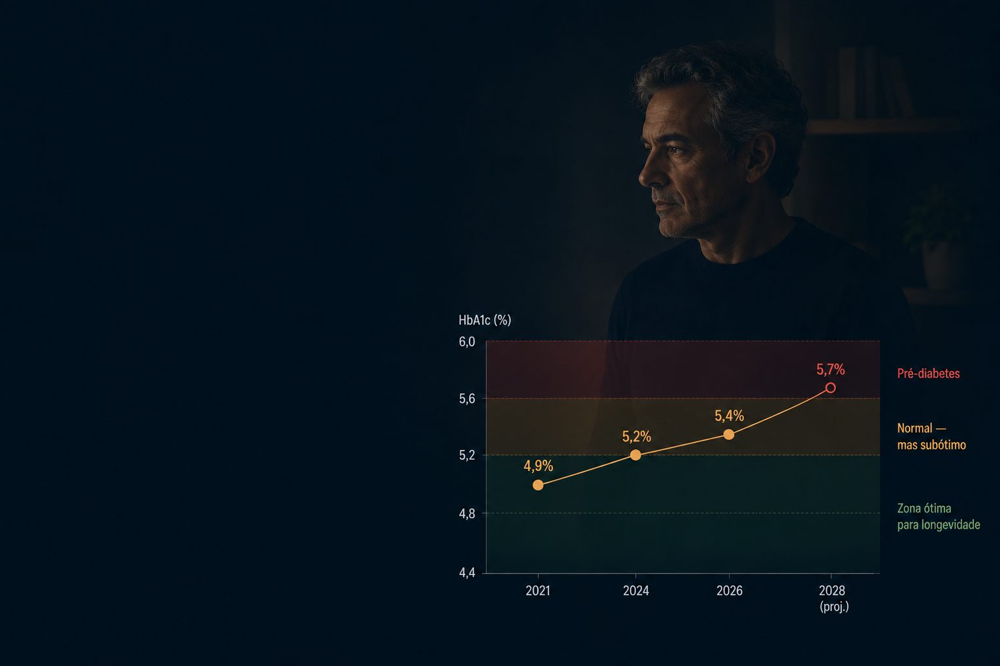
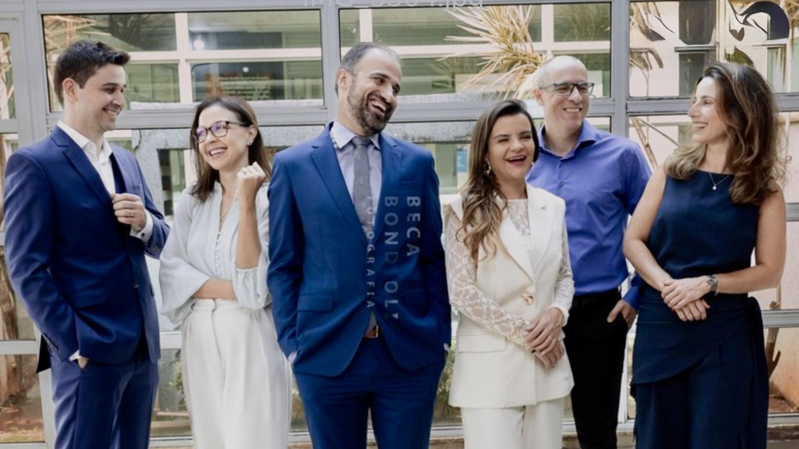

Existe uma década silenciosa entre o que parece normal e o que ainda pode ser transformado.
A maioria das pessoas chama esse período de normalidade.
Nós acreditamos que é onde saúde, performance e a longevidade começam a ser decididas.

Marcadores que continuam mudando dentro da faixa aceitável, enquanto os exames ainda tranquilizam.
É nesse espaço entre o normal e o ótimo
que a saúde é decidida.
E acha que é a idade.
Viver mais não é o mesmo
que viver bem.
um programa Plenya
Saúde construída no tempo, em conjunto, com método.
«Viva bem, viva mais.»
um programa Plenya
Saúde construída no tempo, em conjunto, com método.
«Viva bem, viva mais.»
um programa Plenya
Saúde construída no tempo, em conjunto, com método.
«Viva bem, viva mais.»
Se constrói no tempo, em conjunto, com método.
"Meus exames estão normais."
Entre o que o laudo chama de "faixa aceitável" e o que a sua biologia precisa para estar bem existem dez, quinze, vinte anos — a janela silenciosa.
"Já tenho cardiologista, endócrino, ginecologista."
Coordena longitudinalmente com os profissionais que já cuidam de você. Todos veem o mesmo painel. Cada decisão conversa com as outras.
"Vai dar resultado mesmo?"
A primeira leitura clínica acontece logo na consulta inicial. A curva costuma mostrar movimento entre o primeiro e o terceiro mês — porque é nesse intervalo que os primeiros ajustes maduram.

Médico, nutricionista, psicóloga e educador físico se reúnem antes do seu primeiro encontro, discutem o seu caso e desenham um plano integrado. Cada decisão clínica conversa com as outras.
Quatro pilares interdependentes para uma saúde que se sustenta no tempo.
Não é uma nota. É um mapa.
EXEMPLO · 22 PILARES · ESCALA 0–100
Mais de 800 itens — história, sintomas, exames, hábitos, medicamentos — organizados nos quatro pilares do Método AGIR e consolidados numa pontuação clara, evolutiva e personalizada.
Refeita a cada três meses ao longo do Continuum. A curva mostra o que avançou, o que estagnou e onde a próxima intervenção entra.
Direção, não punição.
Uma trajetória clínica, não uma sequência de consultas.
Suplementos, manipulados e mimos curados pela equipe. Do seu protocolo. No seu ritmo. Novos boxes chegam à medida que o plano evolui.
Cada caixa carrega o manifesto Plenya em ouro foil.
É para quem reconhece um destes momentos.
Quanto mais cedo a gente alinha expectativa, melhor o cuidado funciona.
Sintoma agudo, dúvida específica, exame para interpretar — isso resolve em uma Consulta Plenya. O Continuum é compromisso de seis ou doze meses.
O programa não muda o que você não quiser mudar. Mas também não funciona se a vontade não está. A equipe propõe, devolve dado, ajusta junto. Você executa.
Não somos urgência. O grupo de WhatsApp atende dúvidas em horário comercial — não substitui pronto-socorro nem ambulatório de plantão.
Resolve em consulta única.
Constrói no tempo. Seis ou doze meses.
Se você ainda está em dúvida, comece pela Consulta. O Continuum é pra quem já decidiu o caminho.
Ciclo completo: avaliação inicial, plano integrado, encontros semanais, reavaliação trimestral e fechamento estruturado.
Mesma estrutura, com mais uma reavaliação trimestral e maior consolidação dos hábitos no tempo.
Valores sob consulta. A equipe apresenta as condições em conversa direta.

Conversar com a equipe Plenya.
ou comece pela Triagem do Escore — gratuita, cinco minutos, sem cadastro.
PLENYASAUDE.COM.BR · LONDRINA · PR · CONTATO@PLENYASAUDE.COM.BR